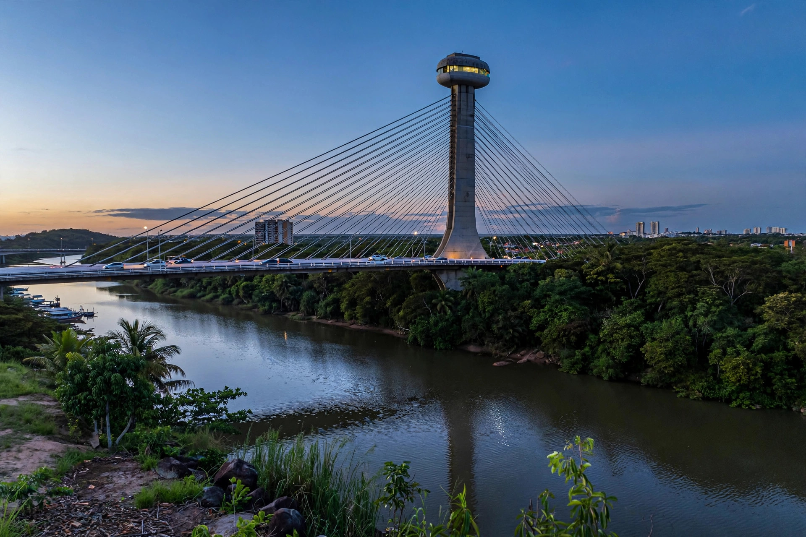

Teresina
Teresina is the capital of the Brazilian state of Piauí, in the Northeast region. Founded in 1852 as a planned capital replacing Oeiras, it lies at the confluence of the Parnaíba and Poti rivers and is the only northeastern capital not on the Atlantic coast. It is among Brazil's hottest cities.
| Country | Brazil |
|---|---|
| State | Piauí |
| Founded | 16 August 1852 |
| Population | about 870,000 |
| Named for | Empress Teresa Cristina |

History
Teresina was designed as a grid-planned city and named for Teresa Cristina, wife of Emperor Pedro II. It grew as a river port on the Parnaíba and as an administrative and trading centre for Piauí's interior.
Geography and climate
The city straddles the Poti River near its junction with the Parnaíba, which forms the border with Maranhão; Timon lies across the river. The climate is tropical and very hot, with a rainy season roughly from December to May and a long, dry, hot season known locally for the "B-R-O-Bró" heat of September–December.
Economy and culture
Services, commerce, health care and education dominate; Teresina is a regional medical hub. Notable sites include the Encontro dos Rios park at the rivers' meeting and the Ponte Estaiada viewpoint.